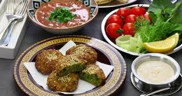
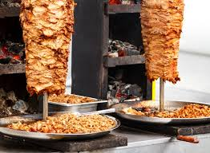

Introduction to Egyptian Cuisine
Egyptian cuisine is a delightful mix of history, culture, and bold flavors. With influences from the Middle East, Africa, and the Mediterranean, Egypt offers dishes that are as diverse as its landscapes. From street food delights to hearty home-cooked meals, Egyptian food is a must-try for any traveler.
Must-Try Egyptian Dishes
- Koshari: A comforting mix of rice, lentils, chickpeas, and pasta, topped with tomato sauce, garlic vinegar, and crispy onions.
- Ful Medames: A traditional breakfast made of fava beans seasoned with olive oil, garlic, and lemon juice.
- Ta'ameya (Egyptian Falafel): Made with fava beans instead of chickpeas, these crispy delights are a street food favorite.
- Molokhia: A green soup made from the molokhia plant, flavored with garlic and coriander, often served with rice or bread.
- Basbousa: A sweet semolina dessert soaked in syrup, often topped with nuts or coconut.
Street Food Adventures
The streets of Egypt are filled with tempting aromas and bustling vendors. You can't miss grabbing a freshly baked pita stuffed with Ta'ameya or savoring a shawarma wrap. Don’t forget to sip on some sugarcane juice, a refreshing drink to beat the heat.
Tips for Food Lovers
- Try the local markets for fresh ingredients and unique spices.
- Explore regional variations of dishes as you travel across Egypt.
- Don't miss dessert! From Konafa to Om Ali, Egyptian sweets are divine.
- Be cautious with street food if you have a sensitive stomach – stick to busy vendors with high turnover.